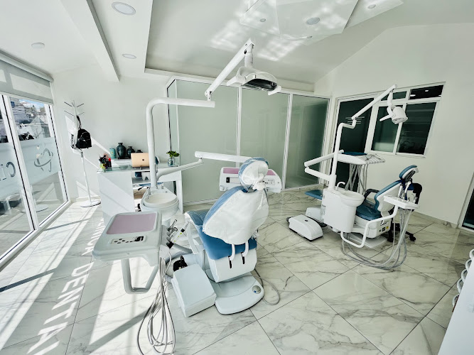
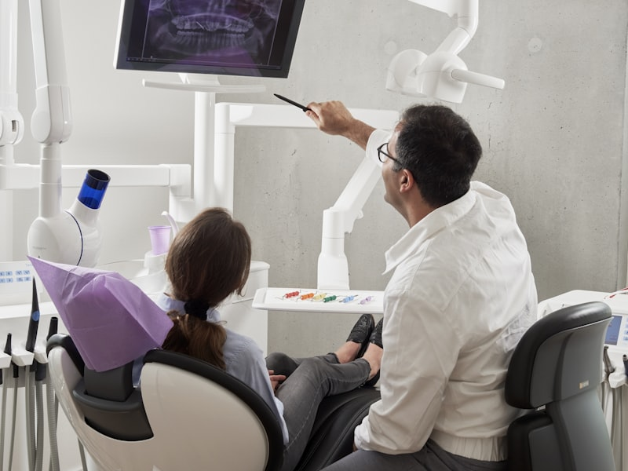
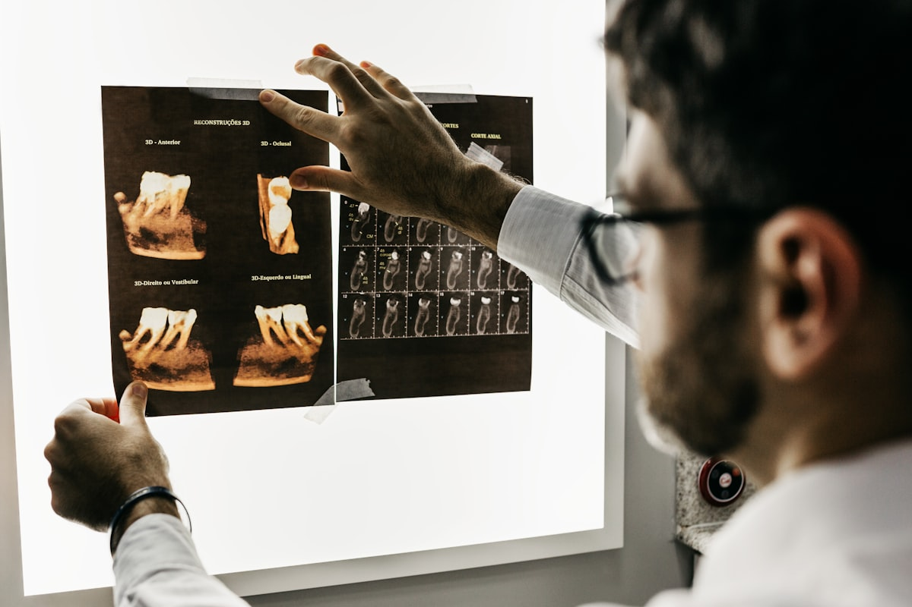

Especialistas en Rehabilitación Oral y Estética Dental en Morelia.
Cuidamos tu salud bucal con atención personalizada, tecnología moderna y un enfoque cálido que reduce la ansiedad. Diagnósticos precisos y tratamientos diseñados para devolverte la seguridad al sonreír.

Cuidado dental integral y especializado
Tratamientos odontológicos avanzados, seguros y enfocados en preservar tu salud dental natural.
Un espacio preparado para tu bienestar
Instalaciones modernas, confortables y con tecnología diagnóstica de alta precisión en Morelia.
Consultorio Clínico Equipado
Espacios impecables y sanitizados con unidades odontológicas ergonómicas para que te sientas seguro y relajado.

Diagnóstico Visual con Fotografía y RX
Evaluación interactiva en pantalla: observamos radiografías y fotografías de cada pieza dental junto contigo.

Rehabilitación Oral e Implantes
Planeación exhaustiva para prótesis fijas, implantes de titanio y diseño de sonrisas naturales y duraderas.
en Google Maps
Profesionalismo que se nota. Atención humana y sin estrés.
Sabemos que acudir al dentista puede generar dudas o tensión. Por eso en Clínica Dental Bucareli diseñamos una experiencia transparente y empática, con citas programadas para brindarte todo el tiempo y cuidado que mereces.
-
✓
Tratamientos conservadores y estéticos Soluciones de mínima invasión para fluorosis, manchas y restauraciones estéticas imperceptibles sin desgastes agresivos.
-
✓
Especialistas en Rehabilitación e Implantes Recupera la masticación y la armonía de tu boca con materiales de alta calidad y precisión médica.
-
✓
Atención exclusiva previa cita Tiempo dedicado 100% a ti, sin salas de espera saturadas ni consultas apresuradas.
-
✓
Facilidades de pago y facturación fiscal Aceptamos tarjetas de crédito/débito, transferencias bancarias y emitimos facturas para deducción de gastos médicos.
Lo que opinan nuestros pacientes
La confianza de nuestros pacientes en Morelia es nuestra mejor carta de recomendación.
¿Listo para cuidar tu salud bucal?
Escríbenos directamente por WhatsApp. Te atenderemos con gusto para resolver tus dudas y programar tu cita de valoración.
Visítanos o contáctanos
Estamos ubicados en una zona accesible sobre la calle Bucareli en la colonia 5 de Mayo, Morelia.